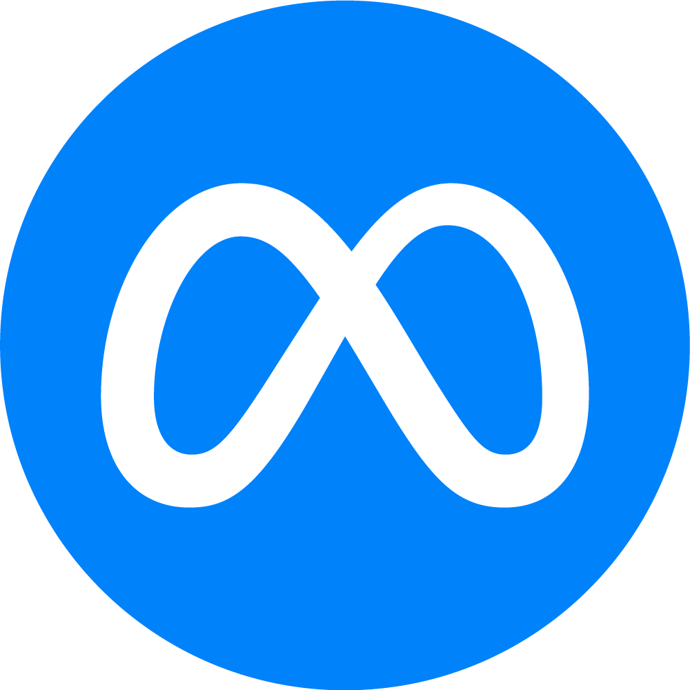
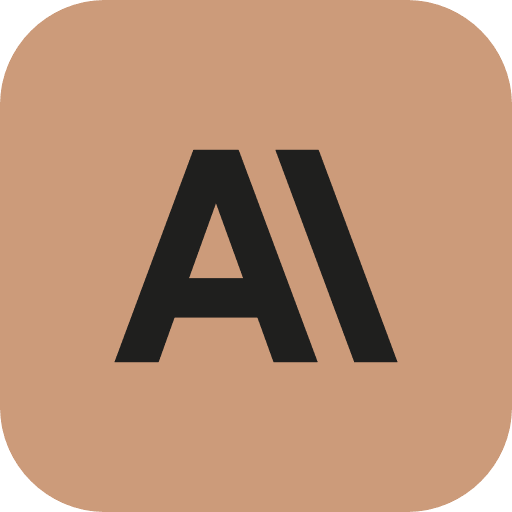
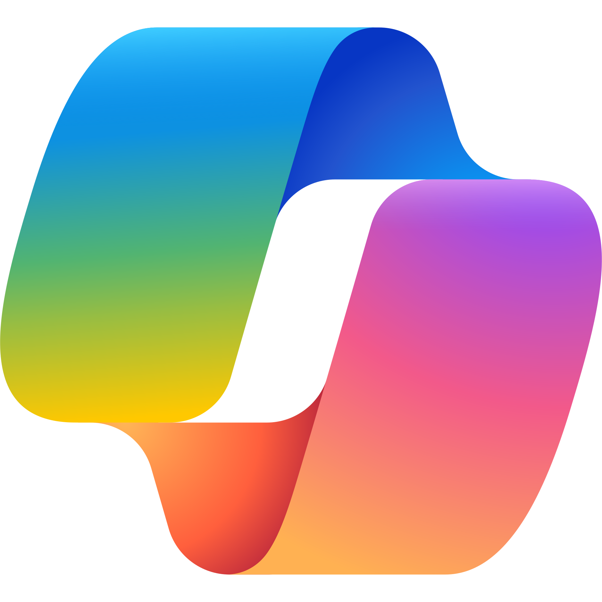

Gedocumenteerde Artificiële Intelligentie:

ChatGPT

Llama
Gemeni

Claude

Jasper AI

Copilot
Andere AI modellen:
Hieronder vind je een lijst van 30 AI's die momenteel ondersteunt worden. Op de dag van vandaag met ontsettend veel innovatie in de IT sector is het erg moeilijk om steeds de laatste AI' toe te voegen omdat er op korte tijd veel kan veranderen. De bekendste staan hierboven maar check zeker de lijst hieronder als je wilt bijleren over de nieuwste of minder populaire AI's. Moest je geïnteresseerd zijn of wil je meer weten? Dan kan je altijd ons Formulier invullen of ons een berichtje sturen via social media!
-
DALL·E:
Deze AI begrijpt zeer goed nuances en detail, waardoor je je ideeën moeiteloos kunt vertalen naar uitzonderlijk nauwkeurige afbeeldingen. -
GPT-3
De voorganger van GPT-4, ook van OpenAI, geschikt voor tekstgeneratie, vertaling, samenvatting en meer. -
BERT (Bidirectional Encoder Representations from
Transformers)
Gemaakt door Google, blinkt uit in het begrijpen van de context van woorden in zoekopdrachten. -
RoBERTa (Robustly optimized BERT approach)
Een geoptimaliseerde versie van BERT door Facebook AI, verbetert prestaties op verschillende NLP-taken. -
T5 (Text-To-Text Transfer Transformer)
Ontwikkeld door Google, zet alle NLP-taken om in een tekst-naar-tekstformaat. -
XLNet
Door Google/CMU, combineert autoregressieve en auto-encoderende methoden voor betere taalmodellering. -
ELECTRA
Gemaakt door Google, richt zich op efficiëntie door te voorspellen welke tokens zijn vervangen door een generator. -
ALBERT (A Lite BERT)
Een lichtere versie van BERT door Google, vermindert geheugengebruik en verhoogt de trainingssnelheid. -
ERNIE (Enhanced Representation through Knowledge
Integration)
Door Baidu, integreert gestructureerde kennis in voorgetrainde modellen. -
Turing-NLG
Ontwikkeld door Microsoft, bekend om het genereren van hoogwaardige tekst en het begrijpen van complexe prompts. -
Megatron-LM
NVIDIA's model ontworpen voor high-performance training op enorme datasets. -
BioBERT
Een variant van BERT voor biomedische tekstmining door DMIS Lab. -
DistilBERT
Een gedistilleerde versie van BERT door Hugging Face, biedt een kleiner, sneller model met minimaal prestatieverlies. -
CTRL (Conditional Transformer Language)
Door Salesforce, genereert tekst op basis van controlecodes voor gerichtere output. -
DialoGPT
Een OpenAI-model dat is getraind voor het genereren van conversatieresponsen. -
OpenAI Codex
Een afstammeling van GPT-3, gespecialiseerd in het genereren van code en het begrijpen van programmeervragen. -
GPT-Neo
Ontwikkeld door EleutherAI, een open-source alternatief voor GPT-3 voor algemene tekstgeneratie. -
Jurassic-1
Door AI21 Labs, een groot taalmodel ontworpen voor diverse tekstgeneratietaken. -
GShard
Door Google, maakt efficiënte training van extreem grote neurale netwerken mogelijk. -
UnifiedQA
Een model door Allen Institute for AI, ontworpen voor vraagbeantwoording in verschillende formaten. -
MT-DNN (Multi-Task Deep Neural Networks)
Microsoft's model voor multitask learning over verschillende NLP-taken. -
Reformer
Door Google, een efficiënt transformer-model dat lange sequenties met verminderde rekeneisen aankan. -
mT5
Een meertalige versie van T5 door Google ontworpen, ondersteunt een breed scala aan talen voor tekst-naar-tekst taken. -
Pegasus
Door Google ontworpen, geoptimaliseerd voor abstractieve tekstsamenvatting. -
BigGAN
Door DeepMind, hoewel primair een beeldgeneratiemodel, het incorporeert geavanceerde transformertechnieken die in taalmodellen worden gebruikt. -
MarIAN
Een meertalig NMT (Neural Machine Translation) model door Microsoft voor hoogwaardige vertaling. -
Switch Transformer
Door Google, gebruikt een mix van experts voor efficiënte training van extreem grote modellen. -
Bart
Door Facebook AI, ontworpen voor sequentie-naar-sequentie taken, combineert het beste van BERT en GPT. -
GLM (General Language Model)
Door Tsinghua University, een Chinees taalmodel voor diverse NLP-taken. -
PANGU-Alpha
Ontwikkeld door Huawei, een grootschalig taalmodel voor Chinese tekstgeneratie.